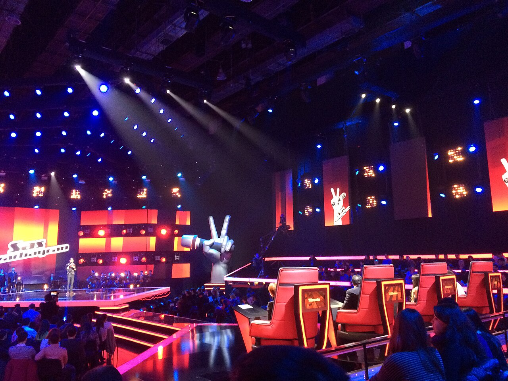
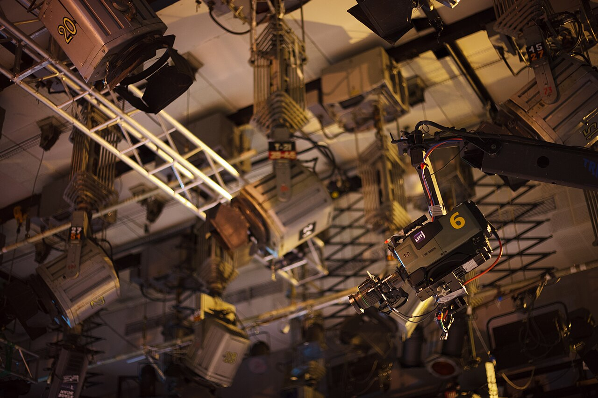

Flightcases voor alles achter de show.
De show begint al bij het inladen.
Een studioshow, een live-uitzending of de volgende zaal. Je apparatuur moet mee, heel aankomen en klaarstaan voor gebruik. Daarom begint een goede flightcase bij jouw werk: laden, opbouwen, draaien en weer door.
Van bus naar backstageGebouwd voor de show.
En de rit erna.
Van laadklep tot studiovloer: een case gaat door veel handen. Dan moeten juist de details kloppen.

Bescherming langs de randen
Metalen hoeken en aluminium profielen beschermen de randen bij het laden en lossen.
Handgrepen die terugklappen
Geveerde handgrepen vallen terug in hun uitsparing. Handig als cases dicht naast elkaar staan.
Dicht. En weer open.
Met vlindersloten sluit je het deksel. Het beslag ligt verzonken in de case.
Door naar de volgende vloer
Zwenkwielen zijn een optie voor het verplaatsen van je set. Stem de uitvoering af op gewicht en gebruik.
Afgebeeld: trunccase. De uitvoering wordt afgestemd op jouw toepassing.
Bekijk dit casetype
In beeld.
Uit de speakers.
Op zijn plek.
Een camera met accessoires. Een lichtset met clamps. Een rack dat op locatie direct aangesloten wordt. Wat je vervoert én hoe je ermee werkt, bepaalt de case.
01Camera, regie & beeld
02Licht & podium
03Audio & 19-inch racks
Jouw set.
Jouw werkwijze.
Jouw case.
Wat moet er mee, hoe vaak en hoe gebruik je het op locatie? Met die informatie wordt een verzameling apparatuur een logische transportset.
Laat je set bekijkenWelke apparatuur?
Merk, model, afmetingen en gewicht. Tel uitstekende delen en accessoires mee.
Hoe gebruik je het?
Uitpakken voor gebruik of aansluiten in de case? Denk aan kabelruimte en bereikbare aansluitingen.
Hoe gaat het mee?
In de bus, op een laadklep of door smalle deuren. Bespreek handgrepen, wielen en beschikbare laadruimte.
Wat is de planning?
Eén case of meerdere sets. Vermeld de aantallen en wanneer je productie begint.
Al precies duidelijk wat je nodig hebt? Kies een casetype en stel je eigen afmetingen en beslag samen in de configurator.
Jouw volgende show.
Goed ingepakt.
Stuur je apparatuur of paklijst door. Of begin direct met configureren als je de maten en uitvoering al weet.
Doesburg, Nederland
{kind=link}
{kind=link}